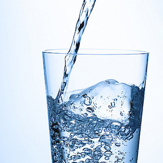
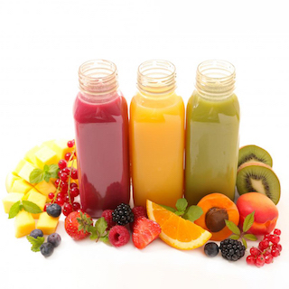

Healthy Drinks
Discover the Best Beverages for Your Health
Choosing Healthier Drinks for a Balanced Diet
It's easy to overlook, but choosing healthier drinks is a key part of getting a balanced diet. Many soft drinks, including instant powdered drinks and hot chocolate, are high in sugar. Food and drinks that are high in sugar are often high in calories, and having too many calories can make you more likely to gain weight. Some energy drinks are high in both sugar and caffeine. Checking the nutrition labels on soft drinks such as fruit juices and fizzy drinks can help you make healthier choices.
How Much Should You Drink?
The Eatwell Guide says we should drink 6 to 8 cups or glasses of fluid a day. Water, lower-fat milk and sugar-free drinks, including tea and coffee, all count.
Healthy Drink Choices
Water
Water is the best choice for staying hydrated and quenching your thirst. It has zero calories, no sugar, and is essential for maintaining healthy bodily functions.
However, if you find the taste of plain water unappealing, try adding a slice of lemon or lime, or infuse it with tea, coffee, or fruit juice.

Milk
Milk is a good source of calcium, protein, and other essential nutrients. Choose semi-skimmed, 1% fat or skimmed milk for a healthier option.
Flavoured milks, milkshakes, and milk-based energy drinks are high in added sugar and should be limited, especially for young children.
Juices
While they do contain vitamins and minerals, fruit and vegetable juices and smoothies can also be high in sugar. Limit your intake to no more than 150ml a day and have other types of fruit and vegetables for the other 4 portions. It's best to drink them with a meal to reduce harm to your teeth.

Unhealthy Drink Choices
Fizzy drinks, squashes, and juice drinks often have high levels of added sugar and very few nutrients. Children should avoid them completely, and adults should keep them to a minimum. Flavoured water drinks can also be high in sugar, so check the label before you buy.